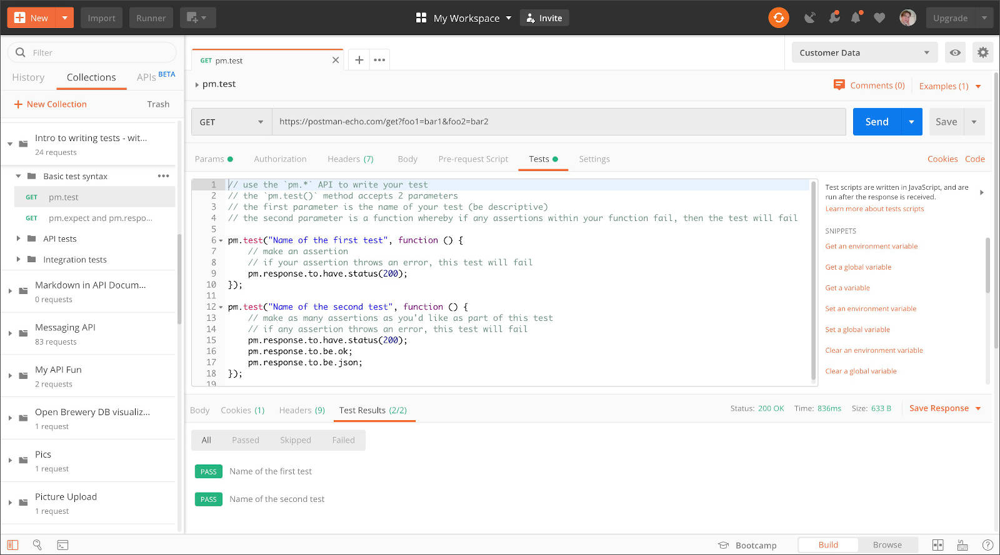
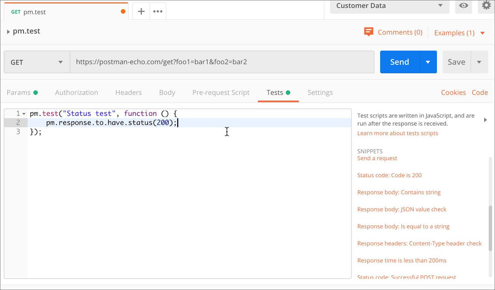
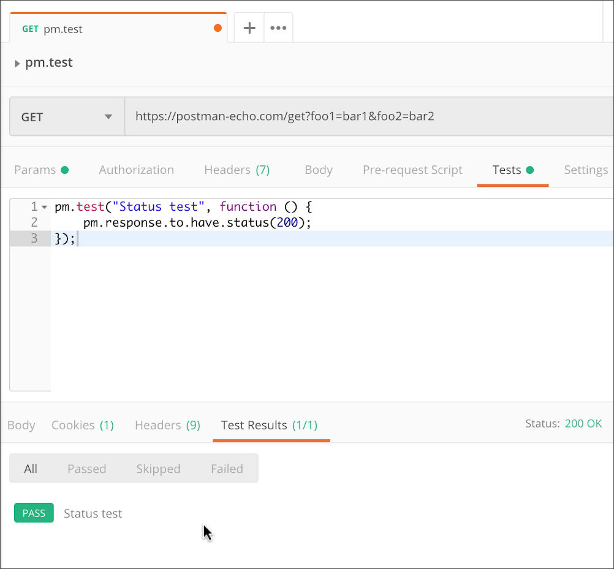
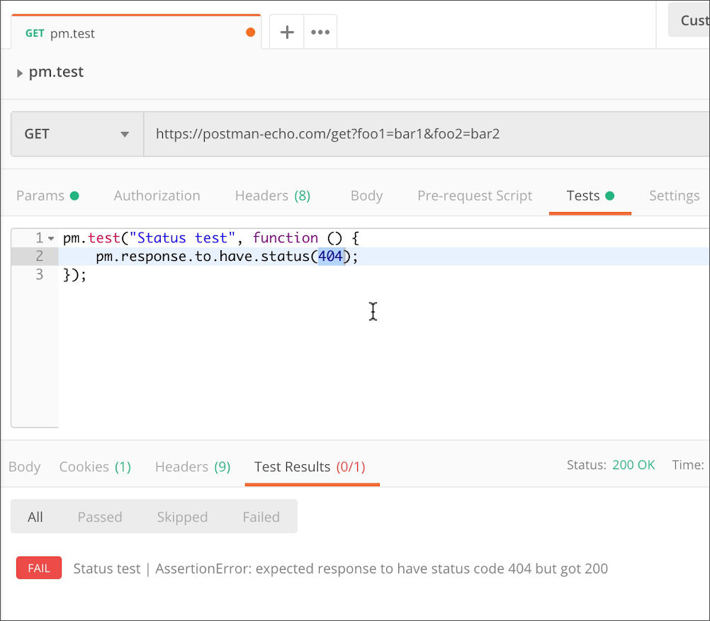
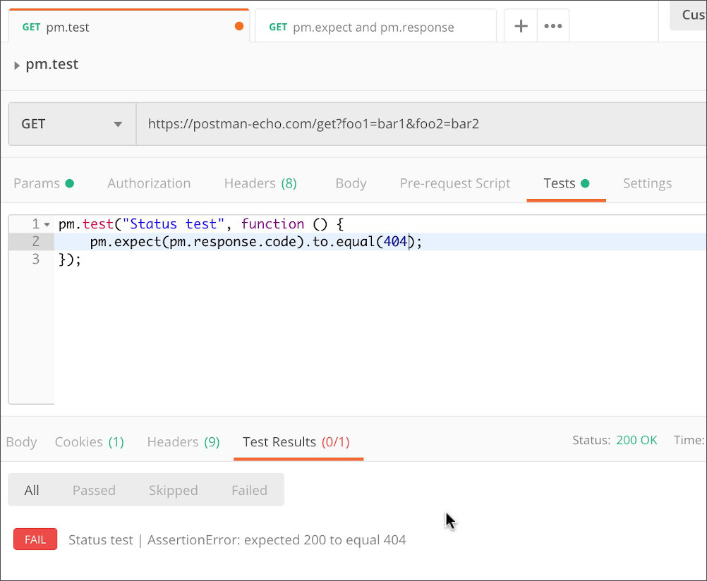
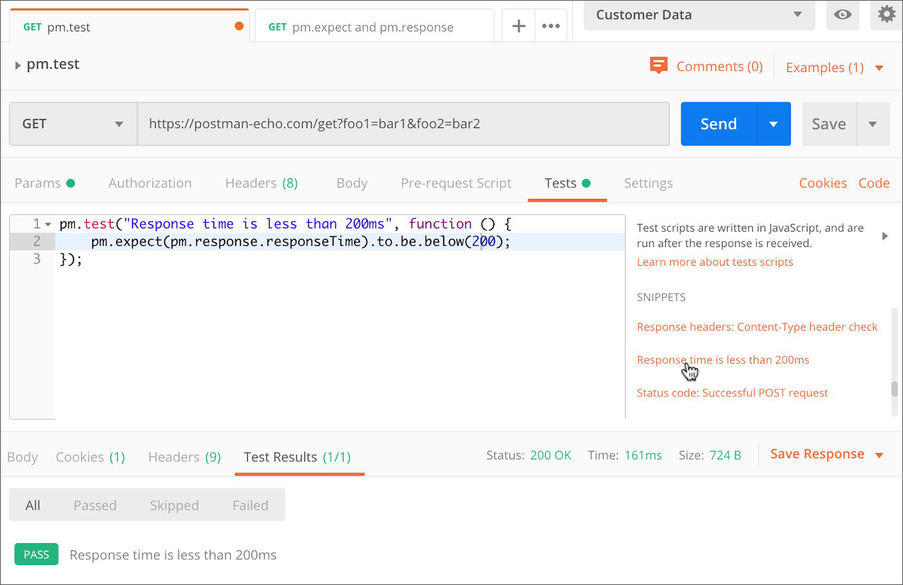
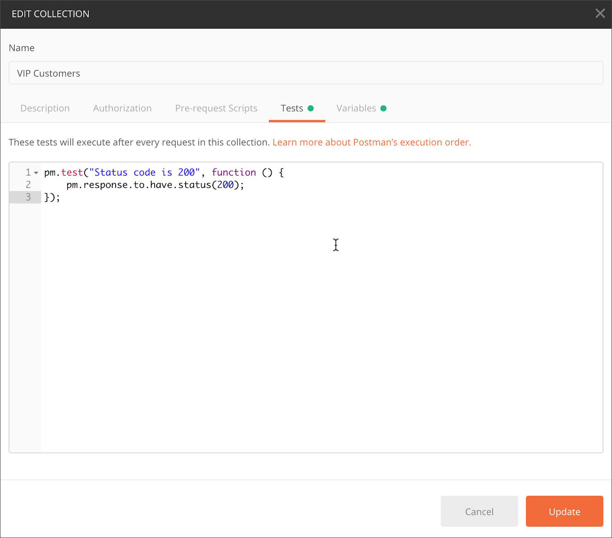
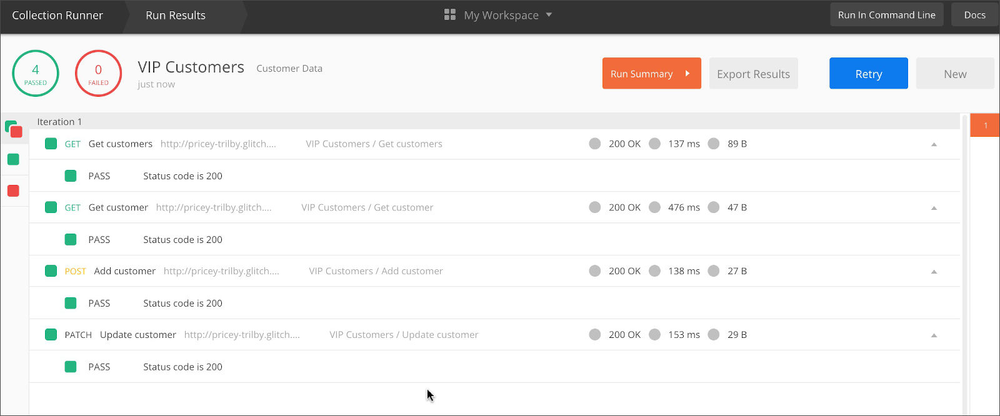

你可以使用 JavaScript 为 Postman 接口请求编写 test 脚本。通过测试，你可以确保接口能够按照预期执行，确定服务之间的集成可靠运行，验证新开发的功能不会影响现有功能。当你的项目出现问题时，你还可以使用测试代码来帮助调试。
例如，你可以编写一个让请求发送不完整数据的测试脚本去验证接口的错误处理。
你可以将 test 脚本添加到单个请求，文件夹和集合中。你可以点击添加 Postman 预置的代码模版，然后根据你的需求去调整修改。
要将 test 脚本添加到请求中，请打开请求，然后在 tests 选项中输入代码。tests 脚本将会在发送请求之后执行。你将在 response 旁边的 Test Result 选项中看到输出信息。

编写test脚本
你的 test 脚本可以使用动态变量对 response 数据执行测试断言并在请求之间传递数据。在 Tests 选项中，你可以手动输入 JavaScript 代码或者是使用代码编辑器右侧显示的代码模版。
Tests 脚本将会在收到 response 之后运行，所以，在你点击发送时，Postman 将会在收到 response 数据之后运行你的 test 脚本。
如果你想在发送请求之前执行代码，请使用 Pre-request 脚本。更多有关当你发送请求时，脚本如何执行的信息，请查看脚本简介。
可以使用 pm.response 对象来测试验证请求返回的数据。你可以使用 pm.test 函数定义测试，该函数提供一个名称和一个返回值为布尔类型（true 或 false）的函数用来标示测试是否通过。你可以在断言中使用 ChaiJS BDD 语法和 pm.expect 来测试response内容。
.test 函数的第一个参数是字符串，它将在测试结果中展示。因此你可以使用它来标示你的测试，并将测试结果展示给任何查看的人。
例如：在 tests 选项中为任意请求输入以下内容用来测试响应状态码是否为200.
pm.test("status test", function() {
pm.response.to.have.status(200);
});
点击发送你的请求，然后在请求结果中打开测试结果。选项标题显示一共运行了多少测试，通过了多少测试。你还可以切换通过，跳过和失败三个选项来筛选展示测试结果。

如果请求返回的状态码为200，则测试通过，否则测试失败。尝试修改测试脚本中的状态码，然后再次发送请求。

使用 pm.expect 可以为你的测试结果消息设置不同的格式-尝试使用各种消息格式以便于找到最适合自己的。

使用“简介”中的 Run in Postman 按钮来编写测试集合，以将包含一些示例测试脚本的模板导入Postman并进行代码试验。
你的代码可以测试请求环境，如下例所示：
pm.test("environment to be production", function () {
pm.expect(pm.environment.get("env")).to.equal("production");
});你可以使用不同的语法来编写你认为易读而且适合你应用程序和测试逻辑的测试代码。
pm.test("response should be okay to process", function () {
pm.response.to.not.be.error;
pm.response.to.have.jsonBody("");
pm.response.to.not.have.jsonBody("error");
});你可以根据返回数据格式调整语法来测试返回值是否有效。
pm.test("response must be valid and have a body", function () {
pm.response.to.be.ok;
pm.response.to.be.withBody;
pm.response.to.be.json;
});Your scripts can include however many tests you need and will save along with the rest of your request detail when you click Save. If you share a collection, or publish documentation / the Run in Postman button, your test code will be included for anyone who views or imports your templates.
你的脚本可以包含许多你需要的测试，当你点击保存时，这些脚本将与其它的请求详情一起保存。如果你分享了一个集合或发布了文档，任何查看或导入你模版的人都可以看到。（此部分由于英文水准不够，翻译的自觉不是很理想，多次修改也未达到自己满意的状态，附上原文。）
使用模版
你将在 tests 选项下的代码编辑器右侧看到一些常用的测试代码模版。点击即可将其添加到编辑器中。模版可以加快你编写脚本的速度-你可以在添加模版后对其进行修改以满足自己的测试需求。

测试集合和文件夹
你可以将 test 脚本添加到集合，文件夹或集合中的单个请求里。与集合相关的 test 脚本将在集合中的每个请求发送之后执行。与文件夹相关的 test 脚本将在文件夹中的每个请求发送之后执行。这样，你就可以在每次发送请求之后执行公共的测试脚本。
将脚本添加到集合和文件夹后，你可以对接口进行流程化测试。这可以确保您的请求覆盖典型场景，从而为用户提供稳定可靠的体验。
你可以通过点击集合或文件夹名字旁边的 … 来查看更多，然后选择编辑 - tests 选项来更新集合和文件夹的脚本。你也可以在首次创建集合时添加集合脚本。

当你执行一个集合时，你可以在 collection runner 中看到测试结果。

你可以在脚本中使用分支和循环来控制发送请求的顺序。
下一步
查看一些测试脚本示例和 Postman API，你可以了解 pm 对象可以执行的操作。你编写的脚本在沙盒环境中运行 - 如果想查看哪些资源是可用的，请查阅文档。
将测试脚本与 Postman 其它功能结合使用（如：监视器），可以验证接口是否满足性能要求。你还可以使用 CI / CD 来进行自动化测试。
附上官方文档。